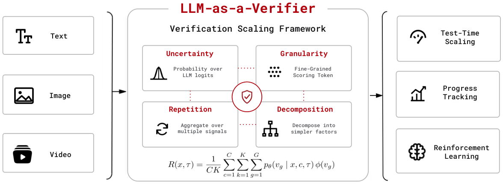
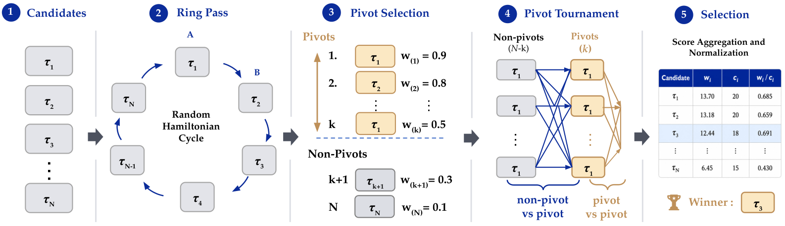

LLM-as-a-Verifier: Verification as a Scaling Axis via Scoring-Token Expectations
Paper: "LLM-as-a-Verifier: A General-Purpose Verification Framework" (arXiv 2607.05391, v1 Jul 2026, v2 current). Authors: Jacky Kwok, Shulu Li, Pranav Atreya, Yuejiang Liu, Yixing Jiang, Chelsea Finn, Marco Pavone, Ion Stoica, Azalia Mirhoseini. Code: github.com/llm-as-a-verifier/llm-as-a-verifier.
TL;DR
- The paper's claim: verification is a scaling axis alongside pre-training, post-training, and test-time compute. Instead of prompting an LLM judge for one discrete score, LLM-as-a-Verifier reads the full logit distribution over an ordered set of scoring tokens and takes its expectation — a continuous reward, no training required — then scales it along three dimensions: score granularity \(G\), repeated evaluations \(K\), and criteria decomposition \(C\).
- Each dimension measurably helps: granularity \(G{=}1\to 20\) raises the signal-to-noise ratio of correct-vs-incorrect separation from 0.775 to 0.799 (pairwise accuracy 73.1%→77.5%); \(K{=}16\) repeats beat single-shot; a 3-criterion ensemble (Specification/Output/Errors) hits 78.3% where any single criterion gets 75.2–76.4%.
- Used for best-of-N selection with a budget-efficient Probabilistic Pivot Tournament, it sets SOTA on Terminal-Bench V2 (83.1%→86.5% with GPT-5.5 under the Capy harness, verifier = Gemini 2.5 Flash) and SWE-Bench Verified (78.2% selecting across an Opus 4.5/Gemini 3 Flash/MiniMax M2.5 pool), and its score doubles as a task-progress signal (Spearman 0.848 on successful trajectories) and a dense RL reward (~1.8× sample efficiency for SAC on LIBERO).
Why this matters
The gap between Pass@1 and oracle Pass@N is the cheapest capability on the table — on the paper's Terminal-Bench pool it's 83.1% vs 92.1% — and the only thing between you and it is a ranker. Standard LM judges are bad rankers for a mundane reason: they collapse a graded internal belief into an integer. In the paper's query-optimize case study, the judge sees the failure (the losing trajectory never validates equivalence against the canonical database) and hedges in prose, but a 1–5 discrete score ties the two trajectories 88 times out of 100. Taking the expectation over the same 5-point distribution eliminates ties entirely; widening to 20 score tokens ranks the correct trajectory strictly higher 77/100 times. Nothing was trained; the information was in the logits all along.
The self-verification economics angle (from the authors' thread) is what lands for open models: sampling 5 candidates with DeepSeek V4 Flash and ranking them with the same model lifted Terminal-Bench 2.1 from 79% to 88%, beating frontier closed models at ~11× lower cost (from the thread/repo — verify against the repo's self-verification section). Cheap tokens turn generate-then-verify into a self-improvement loop with no stronger model anywhere in it.
The core idea

Figure 2 from the paper: one probabilistic verification framework — expectation over scoring-token logits, scaled along granularity, repetition, and decomposition — serving test-time selection, progress tracking, and RL rewards across modalities.Let \(V_{\text{score}}=\{v_1,\dots,v_G\}\) be an ordered set of tokens denoting score levels (extracted from <score_A>/<score_B> tags in a pairwise scoring prompt). Rather than collapsing the model's distribution to its argmax, the reward is the expectation over that distribution, averaged over criteria and repeats:
where \(x\) is the task, \(\tau\) a candidate trajectory, \(c\) indexes \(C\) evaluation criteria, \(k\) indexes \(K\) repeated verifications, \(p_\theta(v_g\mid\cdot)\) is the verifier's probability on score token \(v_g\), and \(\phi\) maps tokens to scalars. After min-max normalization to \([0,1]\), scores become pairwise preferences via Bradley–Terry:
Why does widening the score vocabulary help when it adds no information about the trajectory? The paper's answer: it grants the decoder a finer space to project the model's internal belief — nearby beliefs that would round to the same integer become distinguishable. The effect is quantified with a signal-to-noise ratio over the correct/incorrect score gap \(\Delta=s_c-s_i\):
which rises monotonically with \(G\) (0.775→0.799 from \(G{=}1\) to \(G{=}20\) on Terminal-Bench), and pairwise accuracy is monotone in SNR. Repetition (\(K\)) attacks the variance term; decomposition (\(C\)) replaces one compound question the verifier can latch onto arbitrarily with simpler factors it can answer reliably.
How it works

Figure 6 from the paper: the Probabilistic Pivot Tournament cuts best-of-N ranking cost from \(\mathcal{O}(N^2)\) round-robin to \(\mathcal{O}(Nk)\) by scoring a ring pass first, then comparing everyone only against the top-\(k\) pivots.Selecting the best of \(N\) candidates by full round-robin costs \(\binom{N}{2}\) pairwise verifications with soft win updates \(w_i \mathrel{+}= P(\tau_i\succ\tau_j\mid x)\). The Probabilistic Pivot Tournament (PPT) gets almost all of the accuracy at a fraction of the budget:
Probabilistic Pivot Tournament (best-of-N under budget):
1. Candidates: pool {τ_1..τ_N}, each with K·C·G-scaled verifier scores
2. Ring pass: draw a random Hamiltonian cycle over the pool;
score the N adjacent pairs — every candidate appears once as "A"
and once as "B" (cancels the verifier's positional bias)
3. Pivot selection: rank candidates by ring-pass win mass w_(i);
top-k form the pivot set P
4. Pivot tournament: score every non-pivot-vs-pivot and
pivot-vs-pivot pair via Bradley–Terry preferences
→ O(N·k) comparisons instead of O(N²)
5. Selection: aggregate win mass w_i and comparison count c_i;
return argmax w_i / c_i
Everything is harness- and model-agnostic: the verifier throughout the main results is Gemini 2.5 Flash, scoring trajectories produced by unrelated agents. (For frontier APIs that restrict logprobs, an appendix gives a recovery trick for continuous rewards.)
Results
- Terminal-Bench V2: Capy harness, GPT-5.5, \(N{=}5\) samples/task. Pass@1 83.1%, oracle Pass@5 92.1%; verifier selection reaches 86.5%, above Claude Mythos + Terminus-2 (82.0%), GPT-5.5 + NexAU-AHE (84.7%), and other leaderboard entries. Gains persist on two other harnesses (Terminus-2 71.2%, Terminus-Kira 79.4%).
- SWE-Bench Verified: mini-swe-agent, heterogeneous pool of one trajectory each from Claude Opus 4.5, Gemini 3 Flash, MiniMax M2.5. Pool mean 76.1%, oracle 84.4%; verifier picks 78.2%, above every individual model (best single: Opus 4.5 at 76.8%).
- RoboRewardBench 87.4% / MedAgentBench 73.3%, beating trained robotics reward models on preference accuracy and lowering MAE against human labels.
- Progress tracking: Value-Order Correlation (Spearman between step index and prefix score) is 0.848 on successful Terminal-Bench trajectories vs 0.769 on failures — rising scores mean progress, flat scores are an early-warning signal. This powers their Claude Code/Codex extensions that surface a live verifier score so long agentic jobs can be paused or rolled back before committing broken state.
- Dense RL reward: relabeling rollouts with the verifier progress curve \(r_t = r^{\text{env}}_t + \lambda\rho_t\) gets DSRL-SAC on LIBERO to the same success with ~1.8× fewer environment steps (final 0.76 vs 0.69); GRPO on MATH gains ~1.1× sample efficiency by breaking all-fail reward ties.
How it connects
This is the paper behind two earlier tracker entries (the Terminal-Bench self-verification thread and the framework announcement), now merged. It's the constructive counterpoint to The Verifier Bottleneck thesis that RSI is limited by verification, and to this week's preregistered LLM-judge reliability audit (0.40 ranking agreement across 53k calls): both diagnose discrete judges as noise sources; this paper shows how much of that noise is an artifact of discretization rather than missing knowledge. The progress-score-as-dense-reward section lands on the same problem DRACO attacks the same week from the rubric side — DRACO gets dense credit from judge citations, this gets it from prefix score curves — and both feed the credit-assignment thread (TRACE, GiGPO, Apodex). "Progressive Pessimistic Verification" and "Evaluating the Verifiers" in this tracker are natural follow-ups on when verification itself should be distrusted.
Critical take
The framework's honesty constraint is calibration, and expectation-over-logits is only as good as the verifier's token-level probability mass — a model can be smoothly, confidently miscalibrated, and nothing here detects that (the reliability audit above is the sobering companion read). The SNR gains from granularity are real but small (0.775→0.799); most of the lift in end numbers comes from having a continuous score and repeating it, i.e., from spending more verifier compute — the "scaling axis" framing is apt but so is the bill, and PPT only trims the pairwise-selection term. The SWE-Bench and Terminal-Bench results also ride on candidate pools from very strong generators; verifier selection recovers a slice of the oracle gap (3.4 of 9.0 points on Terminal-Bench), which is valuable but far from closing it. Finally, using the same family of models to generate and verify (the self-verification loop) invites correlated blind spots — the paper's cross-model SWE-Bench pool partially addresses this, but adversarial or self-serving trajectories (the reward-hacking failure modes in this tracker's emergent-cheating entries) are exactly where scoring-token expectations may stay confidently wrong.
If you remember three things
- Don't ask a judge for a score; read the distribution: \(R(x,\tau)=\frac{1}{CK}\sum_{c,k,g}p_\theta(v_g\mid x,c,\tau)\phi(v_g)\) turns any instruction-following LLM into a continuous, training-free verifier, and it eliminates the discrete-tie failure mode that makes LM judges useless on close pairs.
- Verification scales along three cheap knobs — score granularity, repeats, criteria decomposition — and the continuous score is triple-duty: best-of-N ranking (SOTA 86.5% Terminal-Bench V2, 78.2% SWE-Bench Verified), live progress monitoring (VOC 0.848), and dense RL reward (1.8× sample efficiency).
- For open models the loop is the point: generate N cheap candidates, verify with the same model, and the generate+verify bundle can beat a frontier model's single shot at a fraction of the cost — verification is the scaling axis that doesn't need a bigger model.